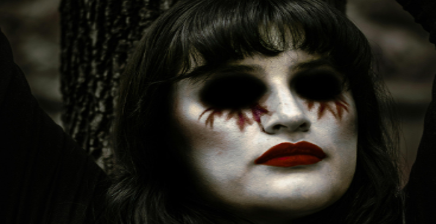

Di sinilah sound design horor mulai bekerja. Kadang, suara yang bahkan belum menampilkan monster sama sekali bisa bikin kamu lebih gelisah dibanding saat monster itu muncul tiba-tiba di depan mata. Dalam horor psikologis, suara bukan sekadar pelengkap visual. Suara bisa membuat kita membayangkan hal-hal yang sebenarnya tidak bisa kita lihat. Ide ini juga muncul di The Child Kidnapper. Jaka awalnya sedang bermain game di kamarnya ketika dia mendengar bisikan misterius. Lalu lampu tiba-tiba mati, dan Wewe Gombel muncul dari layar komputer.
Kenapa Suara Bisa Lebih Menyeramkan daripada Jumpscare?
Jumpscare memang efektif. Wajah menyeramkan muncul tiba-tiba di layar, diikuti suara keras, dan reaksi pertama biasanya, "YA AMPUN!" Ini terjadi karena sesuatu yang disebut startle reflex refleks tubuh secara otomatis saat sesuatu mengejutkan kita tiba-tiba. Dalam film dan game horor, suara keras yang mendadak sering dipakai untuk memperkuat reaksi itu.
Masalahnya, jumpscare biasanya cuma memberi kekagetan sesaat. Begitu monsternya muncul, kita langsung tahu di mana ancamannya berada. "Oh... jadi itu yang tadi." Sound design bisa bekerja dengan cara berbeda. Sebuah suara cuma memberi kita sebagian informasi. Kita dengar sesuatu, tapi tidak tahu dari mana asalnya atau apa penyebabnya. Jadi otak kita mulai berusaha mencari tahu. Dan jujur saja, imajinasi kita kadang bisa menciptakan sesuatu yang jauh lebih menyeramkan dibanding monster aslinya.
Keheningan Itu Bukan Kekosongan. Itu Senjata.
Salah satu bagian terpenting dari sound design horor adalah keheningan. Saat sebuah adegan yang tadinya penuh suara tiba-tiba jadi sunyi, kita secara alami jadi lebih memperhatikan. Suara kecil seperti tetesan air, dedaunan bergerak, napas seseorang, atau lantai berderit bisa tiba-tiba terasa jauh lebih keras.
Dalam horor, suara latar, musik, efek suara, bahkan keheningan bisa membangun ketegangan. Bayangkan Jaka dan Adit berjalan di hutan. Mereka sudah gugup, lalu suara langkah kaki mulai mendekat. Jaka bahkan bersembunyi di balik semak karena mengira ada sesuatu yang datang. Secara visual, kita bahkan belum perlu memperlihatkan Wewe Gombel. Cukup berikan pemain suara langkah kaki.
Dug... dug... dug...
Makin dekat.
Dug... dug... dug...
Lalu...
Hening.
Momen "hening" itulah yang bikin otak mulai bekerja. "Ke mana suara langkahnya?" "Masih ada sesuatu di sana?" "Jangan-jangan di belakangku?" Pemain pun mulai menciptakan horornya sendiri di kepala.
Hal yang Paling Menyeramkan Kadang Justru yang Tidak Bisa Kita Lihat

Horor psikologis sering memanfaatkan satu hal sederhana: orang jadi tidak nyaman ketika mereka tidak bisa memahami atau memprediksi apa yang sedang terjadi. Itu sebabnya suara seperti bisikan, napas, langkah kaki, sesuatu yang bergerak di dekat kita, ranting patah, atau suara dari kejauhan bisa sangat efektif. Kita dengar sesuatu, tapi tidak melihat sumbernya.
Di The Child Kidnapper, ini terjadi sejak awal. Jaka mendengar suara misterius memanggil namanya. Lalu lampu padam. Dia menoleh ke sekeliling, tapi tidak ada siapa-siapa. Bayangkan alur sound design-nya kira-kira begini: suara PC → suasana kamar yang sunyi → suara listrik yang aneh → hening → bisikan sangat pelan → hening lagi → lampu tiba-tiba mati.
Belum perlu jumpscare sama sekali. Pemain sudah bertanya-tanya, "Dari mana suara itu tadi?" Dan selama pertanyaan itu belum terjawab, rasa takut itu akan terus bertahan.
Keras Tidak Selalu Berarti Menyeramkan
Kesalahan umum dalam horor adalah menganggap suara yang lebih keras otomatis lebih menyeramkan. Padahal kalau semuanya keras dari awal sampai akhir, telinga kita akan terbiasa dengan sendirinya.
Sound design yang bagus butuh kontras. Suara pelan bisa membuat suara keras terasa jauh lebih kuat. Keheningan bisa membuat suara kecil terasa penting. Bahkan musik yang tenang bisa membuat perubahan mendadak terasa jauh lebih intens. Jadi sound design horor bukan sekadar soal membuat suara-suara menyeramkan. Ini soal memilih suara yang tepat, volume yang tepat, dan momen yang tepat. Kadang, membuat suara jadi lebih pelan justru bisa membuat adegan lebih menyeramkan.
Dari Bisikan Sampai Teriakan: Suara di The Child Kidnapper
Kalau ide-ide ini diterapkan ke The Child Kidnapper, tiap lokasi bisa punya suaranya sendiri. Di kamar Jaka, kita bisa dengar suara komputer, kipas angin, suara keyboard, dan suasana kamar yang tenang. Saat bisikan misterius muncul, suara-suara latar itu bisa perlahan mengecil, supaya bisikannya lebih menonjol.
Saat cerita berpindah ke hutan, suasananya berubah. Angin, dedaunan, serangga, langkah kaki, dan suara-suara dari kejauhan jadi bagian dari pengalaman. Wewe Gombel sendiri tidak selalu perlu mengeluarkan suara yang jelas atau mudah dikenali. Suara aneh dari kejauhan saja sudah cukup untuk membuat pemain merasa ada sesuatu di dekatnya.
Ide yang sama muncul lagi menjelang akhir, saat Jaka, Adit, dan Desi berusaha melarikan diri. Mereka mendengar langkah kaki dan suara-suara menakutkan di belakang sebelum akhirnya meninggalkan Desi. Wewe Gombel kemudian muncul di belakang Desi, dan adegan langsung memotong ke layar hitam.
Monsternya hilang dari layar. Tidak ada visual sama sekali. Yang ada hanya teriakan Desi: "TOLONG!!!" Lalu... hening.
Kadang, hal yang tidak bisa kita lihat justru jauh lebih mengganggu dibanding sesuatu yang ada tepat di depan mata.
Jadi, Mana yang Lebih Menyeramkan?
Jumpscare dan sound design sebenarnya bukan musuh. Justru keduanya bekerja dengan baik bersama-sama. Jumpscare bisa memakai suara untuk memperkuat efek kagetnya, sementara sound design membangun atmosfer dan ketegangan sebelum jumpscare itu terjadi.
Bedanya sederhana. Jumpscare membuat kita kaget secara tiba-tiba, sementara sound design horor bisa membuat kita gelisah sambil menunggu sesuatu terjadi. Kita dengar sesuatu, tapi tidak tahu apa itu atau dari mana asalnya. Ketidakpastian itu membuat pikiran kita terus bekerja dan membayangkan segala kemungkinan.
Ini juga yang terjadi di The Child Kidnapper. Wewe Gombel tidak selalu harus langsung muncul. Kehadirannya bisa lebih dulu diisyaratkan lewat bisikan, langkah kaki, dan suara-suara lingkungan sekitar. Suara bukan cuma pendukung visual ia bisa jadi bagian dari horornya sendiri.
Karena kadang, suara kecil dari kegelapan bisa jauh lebih menyeramkan dibanding monster yang berdiri tepat di depanmu.
Berani Dengar?
Penasaran seberapa menyeramkan suara yang tidak terlihat itu? Pakai headphone, matikan lampu, dan bayangkan kamu sendirian di tengah hutan yang gelap. Sekarang, dengarkan baik-baik.
Kamu dengar langkah kaki di belakangmu... Makin dekat... Makin dekat... Tapi apa pun yang terjadi... Jangan menoleh ke belakang.
Rasakan suaranya. Rasakan takutnya. Unduh The Child Kidnapper sekarang di Game Jolt dan rasakan sendiri horornya.